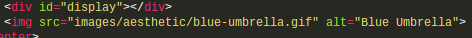

Hello! Below you'll find a step-by-step illustration of the process
I went through to make my
Calculator Page.
First, start off by creating an html file based off a template.
File > New From Template > HTML file
Press ctrl+s, as it will give your file a name. I titled this page "calculator.html".
You could technically have a folder for it, but I like to keep my images and site files separate.
Click save.
The page is now created!

The HTML for the calculator page was fairly simple.
After the initial setup, I added directions for the calculator.
Then, I created two containers for user input, which I named
input1,
<input id= "input1" style="width:200px;">
and input2.
<input id= "input1" style="width:200px;">
These tags were styled so that the calculator would be enlarged and fill up the otherwise empty-looking page
Next, I added the dropdown and answer button.
**xmp and pre code aren't working for me for some so I'll be using screenshots of my code from now on**
I named the dropdown "dropdown" because it's simple and straightforward. The options in the dropdown all have the operation word as a value and the operation itself as a name.
The square root sign was slightly different, and because the sign is a character that the HTML doesn't register correctly in title format, I had to google the HTML name for it.
Here is the code for the answer button.
Next is the most important part of the HTML- the part that links it to JavaScript so that the calculator functions are able to run visibly!
I named the script "calculator.js".


While HTML, the bare-bones of coding, is static, JavaScript is the coding language that runs functions so that the website is user-interactive.
For this webpage specifically, JS was used to do operations that the user would choose from the dropdown made in the HTML previously.
First, I started by typing out the variables that I would use.
The initial variables included the two input boxes, dropdown, answer button from the HTML.
They also include an answer to the operations performed, and a place to display the answers.
Next, I added an event listener so that when the user clicked the answer button,
the answer would be calculated.
Next, we need functions for the calculator to calculate. I named my function "getAnswer", and had an if else for each dropdown value's associated operation.
Parsing the integer refers to taking the user's string input and turning it into a number so that calculations can be performed. The 10 in the code, called a radix, refers to the decimal system.
I technically didn't have to put the 10 there, because without the it's automatically assumed, but the code was advising me to specify the radix just in case.
You will see that the format for squaring and rooting were different than the formats for the first four functions. This is because
they are both Math objects in JS, and we need Math.(insert operation abbreviation here) because normal keyboard symbols won't work within the code.
Lastly, display.innerHTML allows the calculated answer to be displayed on screen in form of the variable "answer", inside the div with the ID "display".
Not quite done yet though.. this page looks quite plain.
To edit the visuals of the page, I created a CSS file and linked it to the top of the head.
I linked Google fonts, a favicon, and a cursor into into the head as well.
In the CSS portion, I edited the assorted sizes, fonts, colors, and paddings of page content.
#navbar {
text-align: center;
}
#navbar li {font-family: "satisfy", cursive;
display:inline-block;
padding: 10px;
font-size: 20px;
border: 10px solid #ffe6ff;
border-radius: 20px;
background-color: #4d1933;
}
#navbar a {
color: #e6ffff;
font-family: "Satisfy", cursive;
text-decoration: none;
}
body {
background-image: url(images/aesthetic/cherrywp.jpg);
/* Set a specified height, or the minimum height for the background image */
min-height: 500px;
/* Set background image to fixed (don't scroll along with the page) */
background-attachment: fixed;
/* Center the background image */
background-position: center;
/* Set the background image to no repeat */
background-repeat: no-repeat;
/* Scale the background image to be as large as possible */
background-size: cover;
}
body {
color: #000000;
font-family: "Open Sans", cursive;
text-decoration: none;
font-size: larger
}
#input1 {
font-size: 50px;
color:#4d1933;
background-color: #c4daff;
padding: 15px;
}
#input2 {
font-size: 50px;
color:#4d1933;
background-color: #c4daff;
padding: 15px;
}
#dropdown {
font-size: 50px;
color:#4d1933;
background-color: #f5c4ff;
padding: 15px;
}
#answerButton {
font-family: "Satisfy", cursive;
font-size: 50px;
color:#4d1933;
background-color: #f5c4ff;
padding: 15px;
}
#display {
font-family: "Satisfy", cursive;
font-size: 50px;
color:#4d1933;
}
I copied and pasted my navbar from my other pages, and made sure to link the calculator html page into the other pages' navbars as well.
To finish off the page, I centered everything and linked a nice pixel icon into the page after the display div as well, so that people could see where their task list ended.

And that's it! Enjoy the finished calculator ☺